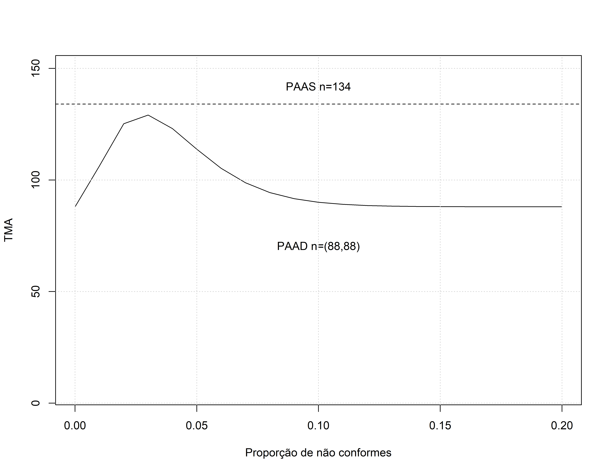
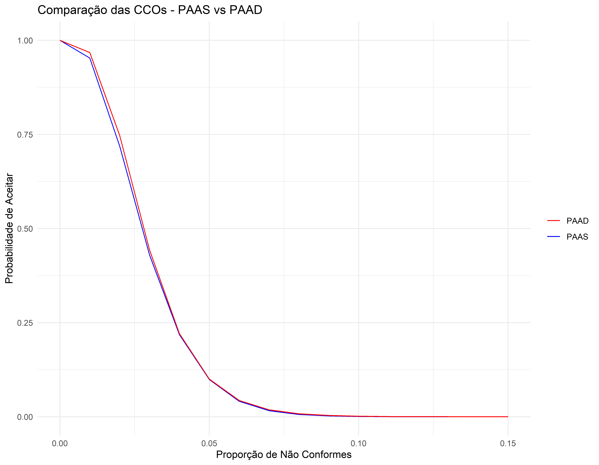

PAAS vs PAAD
Biblioteca
PAAS - Poisson
PAAD - Poisson
Neste caso não podemos mais usar a função find.plan, pois ela só serve para os PAAS.
Aqui vamos precisar de usar a tabela de Schilling e Johnson para definir o plano de auditoria.
# p1=0,01
# p2 = 0,05
# alfa = 0.05
# beta = 0.10
# p2/p1 = 5
# Plano 3D a1=1 a2=4 r1=4 e r2=5 n1=n2=88
paad <- OC2c(n=c(88,88),c=c(1,4),r=c(4,5),type="poisson",pd=seq(0,.15,.01))
assess(paad,PRP=c(.01,.95),CRP=c(.05,.10))#> Acceptance Sampling Plan (poisson)
#>
#> Sample 1 Sample 2
#> Sample size(s) 88 88
#> Acc. Number(s) 1 4
#> Rej. Number(s) 4 5
#>
#> Plan CAN meet desired risk point(s):
#>
#> Quality RP P(accept) Plan P(accept)
#> PRP 0.01 0.95 0.96755953
#> CRP 0.05 0.10 0.09985685TMA
pd<- seq(0,.20,.01) #Proporção de não conformes
lambda<- 88*pd # número esperado de não conforme numa amostra de 88
# Probabilidade de aceitar na 1a amostra
OC1<-ppois(1, lambda, lower.tail=TRUE)
# Probabilidade de rejeitar após a 1a amostra
R1<-ppois(3, lambda, lower.tail=FALSE)
# lower.tail logical; se TRUE (default), as probabilidades são
# P[X≤x], caso contrário, P[X>x].
# Probabilidade de tomar uma decisão na 1a amostra
P<-OC1+R1
# Tamanho médio de amostra
TMA=88+88*(1-P)
# Gráfico do TMA
plot(pd,TMA,type='l',ylim=c(5,150),xlab="Proporção de não conformes")
abline(134,0,lty=2)
text(.10,142,'PAAS n=134')
text(.10,70,'PAAD n=(88,88)')
grid()
Valores de TMA
gt::gt(data.frame(
Proporção = pd,
TMA = TMA
)) |>
gt::tab_header(
title = "Tamanho Médio de Amostra - PAAD"
) |>
gt::fmt_number(
columns = c(Proporção, TMA),
decimals = 2
) |>
gt::cols_label(
Proporção = "Proporção de Não Conformes",
TMA = "Tamanho Médio de Amostra"
)| Tamanho Médio de Amostra - PAAD | |
|---|---|
| Proporção de Não Conformes | Tamanho Médio de Amostra |
| 0.00 | 88.00 |
| 0.01 | 106.28 |
| 0.02 | 125.21 |
| 0.03 | 129.14 |
| 0.04 | 123.07 |
| 0.05 | 113.80 |
| 0.06 | 105.24 |
| 0.07 | 98.77 |
| 0.08 | 94.39 |
| 0.09 | 91.65 |
| 0.10 | 90.02 |
| 0.11 | 89.09 |
| 0.12 | 88.58 |
| 0.13 | 88.30 |
| 0.14 | 88.15 |
| 0.15 | 88.08 |
| 0.16 | 88.04 |
| 0.17 | 88.02 |
| 0.18 | 88.01 |
| 0.19 | 88.00 |
| 0.20 | 88.00 |
Comparando as CCOs
pass_paad <- data.frame(
Proporção = cco_paas@pd,
PAAS = cco_paas@paccept,
PAAD = paad@paccept
)
# Grafico Comparativo do PAAS e PAAD
library(ggplot2)
ggplot(pass_paad, aes(x = Proporção)) +
geom_line(aes(y = PAAS, color = "PAAS")) +
geom_line(aes(y = PAAD, color = "PAAD")) +
labs(title = "Comparação das CCOs - PAAS vs PAAD",
x = "Proporção de Não Conformes",
y = "Probabilidade de Aceitar") +
scale_color_manual(values = c("PAAS" = "blue", "PAAD" = "red")) +
theme_minimal() +
theme(legend.title = element_blank())